X3 SDB生态套件¶
1. 开发板介绍¶
X3 SDB 开发板又称为X3 生态开发板，它基于 X3M 主控芯片打造，可以提供等效 5T AI 算力、支持多路摄像头输入，提供丰富的标准硬件接口，适配各类产品和外形规格。基于地平线“天工开物”软件栈，用户可以实现快速开发、开发中方案验证以及高校研究等场景。
Note
X3 SDB 开发板目前是地平线对外公开销售的唯一一款官方开发板。 你可以可通过地平线商务途径获取，或者自行从地平线官方社区进行购买。
购买链接：https://developer.horizon.ai/forum/id=5f62c6d3cc8b1e59c8582e25
X3 SDB 开发板由底板和核心板（X3 SOM）组成，两者通过 DIMM 插槽连接，并具有防呆设计，安装方法跟笔记本内存类似，将核心板倾斜 4 5度插入 DIMM 插槽，然后按压锁止即可。示意图如下所示：
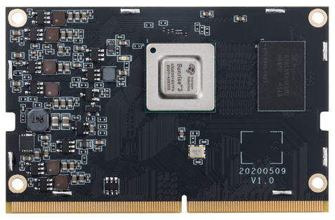 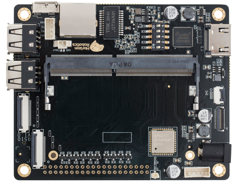板卡关键属性如下所示：
功能模块 |
规格 |
|---|---|
主控芯片 |
地平线SOC X3（Cortex A53 x4， BPU x2） |
DDR |
1GB/2GB LPDDR4 |
Flash |
8GB/16GB EMMC |
摄像头 |
MIPI CSI 4lane+2lane+2lane |
显示 |
MIPI CSI 4lane+2lane+2lane |
USB |
Device mode：Micro USB 3.0 x1;Host mode：USB Type A 2.0 x4 |
以太网 |
10/100/1000 Mbps RJ45 x1 |
Debug口 |
Debug 串口 x1 |
LED |
核心板电源LED x1; 底板电源LED x1 |
扩展口 |
40pin扩展 |
电源 |
12V 2A适配器 |
尺寸 |
100mm x 82mm |
开发板接口示意图如下所示：
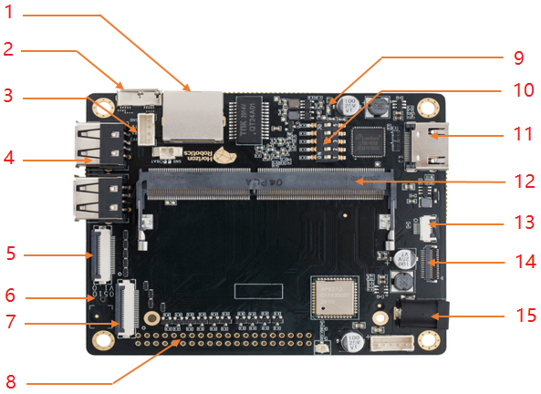左边：【1】网口；【2】Micro USB 3.0；【3】Debug串口(默认921600)；【4】USB type A 2.0；【5】MIPI CSI 1 (4lane)；【6】TF卡槽(背面)；【7】MIPI CSI 2 (2lane)；【8】40PIN扩展口；
右边：【9】Power LED；【10】DIP Switch；【11】HDMI(1080P)；【12】X3SOM DIMM；【13】TP连接器；【14】MIPI DSI；【15】12V电源口
2. 组装与启动¶
X3 SDB 开发板共包括如下组件：
X3 SDB 核心板和底板各一套
Camera 模组板一套
LCD、TP 模组板一套（如需要屏显交互）
12V@2A 电源适配器一套
串口转接板一套，3PIN 杜邦线一条
RJ-45 网线一条
开发板硬件组装主要包括了核心板&底板组装，Camera 连接，HDMI/LCD 连接，Debug 串口，USB 接口，以太网网口，TF Card，WIFI&BT 等如下 8 个步骤：
2.1 核心板&底板组装¶
X3 开发板由底板和核心板（X3 SOM）组成，核心板是以金手指形式，通过 DIMM 插槽连与底板连接，并具有防呆设计，安装方法跟笔记本内存类似，将核心板倾斜 45 度插入 DIMM 插槽，然后按压锁止即可。
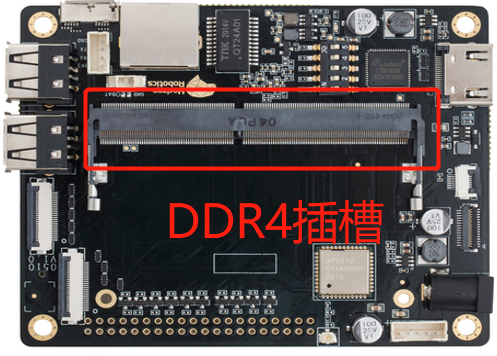 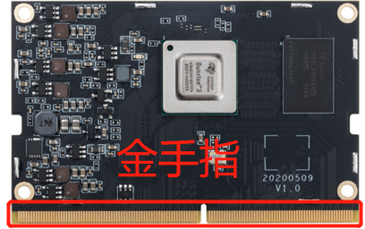 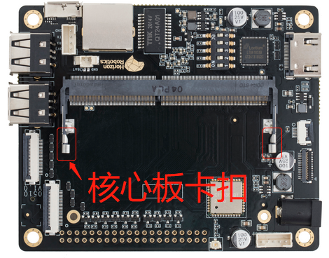{kind=link}
{kind=link}
{kind=link}
2.2 Camera 连接¶
X3 提供两个 camera 接口，使用的是 24P 翻盖 FPC 连接器。其中靠近 USB 的 接口A 支持一路 4Lane 的 Camera 或者两路 2Lane 的 Camera，靠近板边的 接口B 支持两路 2Lane 的 Camera。
目前开发板支持 8M OS8A10、2M F37以及usb camera(USB接口) 三种 Camera，连接接口如下所示。
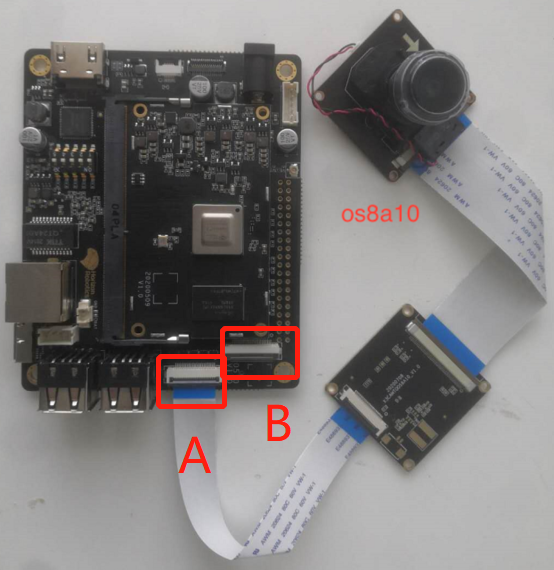 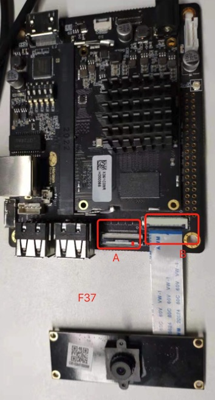{kind=link}
{kind=link}
其他更多 Camera 类型情况请联系地平线技术支持进行获取。
2.3 HDMI/LCD 连接¶
X3 提供 HDMI 和 LCD 两个可视化接口，其中 HDMI 由 BT1120 通过龙讯 LT8618EX 转换输出，目前支持 1920X1080P。带触摸功能的 LCD 会有两个接口，一个是 6P 连接器用于连接触摸 FPC 线，另一个是 31P 用于MIPI DSI 信号传输传输。目前可支持 5 寸带触摸 720X1280P 的 LCD 屏。
连接示意图如下所示：
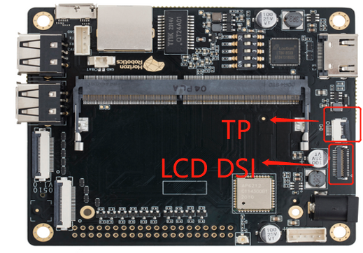 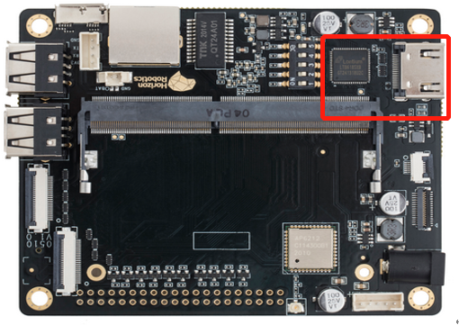{kind=link}
{kind=link}
2.4 Debug 串口¶
X3 提供 UART0 用于日志输出与功能调试，接口电平为 3.3V，板端提供 4P 2.0mm 间距的连接器作为调试接口。通过两条 2P 2.0mm 转 2.54mm 的杜邦线与 CP2102 USB 转 TTL 串口连接，可通过拨码开关切换。调试口连接器与串口如下图所示: 默认波特率为 921600。
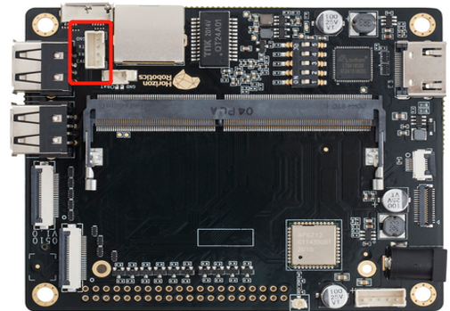 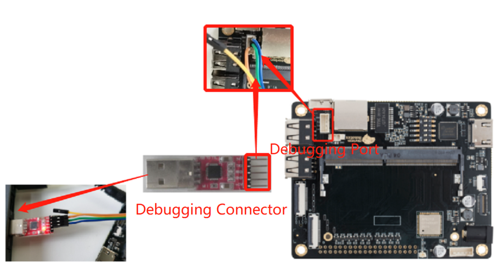{kind=link}
{kind=link}
2.5 USB 接口¶
X3 提供一路 Micro USB3.0 和 4 路 USB2.0。其中 Micro USB 中的 USB2.0 与 4 路 USB2.0 的功能互斥，当需要使用 4 路 USB2.0 时，将 X2A_USB_VBS 配置为低且同时需将 JTG_TRSTN 配置为高，打开 4 路USB2.0 的供电电源；当需要使用 Micro USB 时，将 X2A_USB_VBUS 配置为高，详细请参考系统软件文档进行配置。
2.6 以太网网口¶
X3 提供了一路以太网接口。以太网可实现 1000BASE-T、100BASE-T 和 10BASE-T 标准的以太网物理层部分，通过 RJ45 连接器与网线连接。RJ45 连接后默认 ip：192.168.1.10。
{kind=link}
2.8 WIFI&BT¶
X3 基于 AP6212 模组设计了 WIFI+ 蓝牙功能。AP6212 是结合 WiFi + BT + FM 技术的整体解决方，该模块符合 IEEE 802.11 b/g/n 标准，它在 802.11n 草案中的单个流，802.11g 中指定的 54Mbps 或 802.11b 用于连接无线 LAN 的 11Mbps 的情况下，可以达到 72.2Mbps 的传输速度。集成模块提供了用于 WiFi 的 SDIO 接口，用于蓝牙的 UART/PCM 接口和用于 FM 的 UART/I2S/PCM 接口。
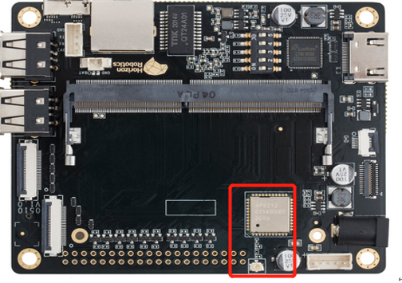{kind=link}
2.9 开发板上电¶
在开发板上电之前，需要检查 DIP 开关配置状态，默认值全部设置为 0，代表正常从 EMMC 启动，UART 波特率为 921600。
完整的 DIP 开关配置如下所示：
PIN |
Value |
Func |
|---|---|---|
3:1 |
000 |
Boot From EMMC |
3:1 |
001 |
Boot From SPI NAND |
3:1 |
010 |
Boot From BIFSPI |
3:1 |
011 |
Boot From UART |
3:1 |
100 |
USB Normal Boot |
3:1 |
101 |
Boot From SPI NOR |
4 |
0 |
EMMC：CLK invert;NAND：2K Page;NOR：32bit ADDR |
4 |
1 |
EMMC：CLK invert;NAND：4K Page;NOR：24bit ADDR |
5 |
0 |
UART Baud：921600 |
5 |
1 |
UART Baud：115200 |
确认安装无误之后，将适配器接入底板牛角座，如果底板和主板的红色 LED 灯同时亮起，说明设备上电正常，与此同时 debug 串口会输出设备运行信息。
Warning
由于核心板 PCB 面积紧凑，并且与底板采用 DIMM 方式连接，因此无法充分利用 PCB 面积进行散热。推荐用户在长时间使用设备时，为 X3 芯片安装随主板附送的散热片。